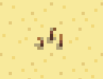
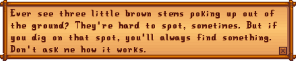

Artifact Spot
| Artifact Spot | |
 |
|
| How did you get this in your inventory? | |
| Information | |
| Season | |
- See also: Seed Spot
An Artifact Spot (also known as worms, stems, or twigs) is a tile that is guaranteed to provide an item when dug up with a Hoe (other tools do not work). Artifact Spots can be found in various tillable (but fallow) tiles on maps all over Stardew Valley (including Ginger Island). Up to 16 can also be created in a given area by using a Treasure Totem.
A variety of location-dependent items can be obtained from artifact spots; they are a key source for Artifacts and Lost Books. Artifact spots are much more common in Winter, when they can also yield Snow Yams and Winter Roots.
Contents
| Article Stub
This article is marked as a stub for the following reason:
|
The possible contents of an artifact spot are controlled by the map where it is located. The specific item found in any artifact spot is mostly fixed for a given day and number of Treasure Totems used, even if the game is reloaded.[1] However, a different item is possible if a treasure totem is used, or the next day (assuming the artifact spot does not disappear overnight). Using a Hoe with the Archaeologist enchantment doubles the chance of finding most artifacts, but otherwise does not affect what item is found. Conversely, unlocking farming mastery will likely change the item that is found, even if the animal cracker is not found.
The pool of potential items contained within artifact spots is checked against a list, in the order listed below. The chances to find items later in the list vary depending upon the details of which earlier items still remain possible. The percentages provided are valid for a hoe without the Archaeologist enchantment (values are 20-40% smaller with the enchantment, except for lost books), and - with the exception for the season specific drops - for summer and fall (values are generally 60% smaller in winter and 6.25% smaller in spring, with the exception of Qi Beans in spring and lost books in both).
- 20-32% chance of a Lost Book.[2] Not possible on the Farm. Note that once all Lost Books are found, any potential Lost Book is replaced by Mixed Seeds.
- Various Artifacts, dependent upon location. Note, however, that some artifacts can never be found in artifact spots (namely, Dwarf Scrolls, Dwarvish Helm, Dwarf Gadget, Rare Disc, and Skeletal Tail), 3-26% chance.
- In Winter only: 35-49% chance of a Winter Root or a Snow Yam (Winter Root is 50% more likely than Snow Yam in all locations). Not possible in the Desert.
- During Qi's Crop quest only: 14-20% chance of 2-5 Qi Beans. If selected, it will continue to produce more drops.
- In Spring only: 4-5% chance of 1-5 Rice Shoots. Not possible in the Desert or Beach.
- 2-5 Bone Fragments, only during or after completing Gunther's Special Order "Fragments of the past" (12-16% chance). If selected, it will continue to produce more drops.
- A location-dependent list of other items. Some artifacts can reappear in this second list, but most of the items are resources.
- 1-3 Coal: Backwoods (48%), the Mountains (36%), the Farm (40%)
- 1-3 Copper Ore: Pelican Town (14%), Railroad (11%), Bus Stop (9%), Backwoods (3%), Cindersap Forest (5%), the Mountains (2%)
- 1-3 Gold Ore: the Beach (5%)
- 1-3 Mixed Seeds: the Farm (4%)
- 1-3 Stone: (4-20% depending on location)
- An unseen Secret Note or a Stone: 1-7% chance.[3]
- Starting Summer 1 of Year 1: 1-5% chance for a 1 Warp Totem: Farm, Warp Totem: Mountains, or Warp Totem: Beach. If prior to Summer 1 of year 1, Clay will drop instead as the last item in the list.
- 1-3 Clay: (10-48%)
Prior to iterating through the list of items, each Artifact Spot can also spawn (in addition to the above, and in addition to each other):
- 1-2 Mystery Boxes (0-11.25% chance depending on daily luck after the player has viewed the Mr. Qi plane cutscene)
- A Golden Animal Cracker (0.8-1% chance depending on daily luck after claiming Farming Mastery).[4]
- Either Bait And Bobber, Combat Quarterly, Mining Monthly, Stardew Valley Almanac, or Woodcutter's Weekly (0.54% chance overall, 0.11% chance to obtain each one).[4]
- A random cosmetic item (1.8% chance).[4]
- During the Desert Festival, each artifiact spot in the desert will also spawn between 3 and 6 Calico Eggs.[5]
On Ginger Island
On Ginger Island, there are 3 separate attempts to spawn an item from an artifact spot.[6] In the first attempt, the game checks through the following items in order, with the final chances as shown:
- 1 Golden Coconut (10% after a golden coconut was cracked)
- 2-4 Taro Tubers (33%) (29.7% after a golden coconut was cracked)
- 1-2 Artifact Troves (10%) (9% after a golden coconut was cracked)
After this it can then spawn the items below, with each check carried out separately, so it can spawn all four.[4]
- 1-2 Mystery Boxes (0-11.25% chance depending on daily luck after the player has viewed the Mr. Qi plane cutscene)
- A Golden Animal Cracker (0.8-1% chance depending on daily luck after claiming Farming Mastery).
- Either Bait And Bobber, Combat Quarterly, Mining Monthly, Stardew Valley Almanac, or Woodcutter's Weekly (0.54% chance overall, 0.11% chance to obtain each one).
- A random cosmetic item (1.8% chance).
Finally, it then goes through a list of possibilties in order, stopping as soon as it generates an item. The list below shows the chance for each item at that step. The actual chance to obtain that item will depend on the chances of the items available before it.[7]
- Fossilized Ribs (10%, only on Island South, only if the island cave has been opened)
- Snake Skull (10%, Island West only if the island cave has been opened, Island North only if the bridge to the dig site has been fixed)
- Snake Vertebrae (25%, Island West only if the island cave has been opened)
- 1-4 Bone Fragments (25%, Island North only if the bridge to the dig site has been fixed. Number of fragments increases with Luck and Mining level)
- Lost Book (20% chance). Note that once all Lost Books are found, any potential Lost Book is replaced by Mixed Seeds.
- Qi Beans (During Qi's Crop quest only 25% chance of 2-5). If selected, it will continue to produce more drops.
- 2-5 Bone Fragments (20% chance only during or after completing Gunther's Special Order "Fragments of the past"). If selected, it will continue to produce more drops.
- 1-3 Golden Coconut (5%)
- 1-3 Mahogany Seed (5%)
- 1-3 Wild Bait (10%)
- 1-3 Omni Geode (100%)
Spawning
Overnight, artifact spots randomly spawn in exterior locations at a rate that is highly dependent upon the map.[8] Average spawn rates range from 0.1/day (Cindersap Forest, Bus Stop) to 1/day (Desert). Other than during Winter, artifact spots only appear in tillable soil, i.e., yellow/brown tiles that can be tilled with a Hoe. In Winter, the artifact spot spawn rate is higher and they can also appear in grass-type tiles (i.e., tiles that are colored green during non-winter months; this designation is not based on whether or not harvestable Grass is growing). Winter-time average spawn rates range from 0.4/day (Railroad) to 1.4/day (Desert).
Existing artifact spots left in an area overnight block new artifact spots from spawning, according to the following rules:
- Each area is processed independently; for example, an existing artifact spot on the beach has no effect on spawning of other areas (e.g., the Bus Stop, or Cindersap Forest).
- Spawning is blocked if there are two or more artifact spots already existing in the same area[9] (for the Farm, spawning is blocked if even one exists already).
- In Winter, for all locations, the limit is relaxed. Spawning is no longer blocked unless there are five or more already.
- Spawning is calculated after possible removal of any existing spots, so even when there is an artifact spot left overnight, there is some chance it may be removed and replaced with new spawns.
Artifact spots never spawn in hidden tiles behind buildings, bushes, non-removable trees, or other permanent features. However, they can spawn in difficult-to-see locations behind removable trees (ones the player can chop down). Artifact spots also never spawn in tiles where other objects are present (chests, trees, equipment, weeds, debris, etc.), or in any tilled soil (anywhere a crop is planted or could be planted). Thus, placing equipment or planting trees in tillable soil can reduce the chance of artifact spots spawning, but only if a large fraction of the tiles is occupied.
Removal
If the player does not dig up an artifact spot, it is likely to remain in place for multiple days. Normally, there is a 15% chance[8] of any artifact spot disappearing overnight.
Artifact spots do not get destroyed for reasons other than the player or random removal. For example, villagers and farm animals can walk through tiles containing artifact spots without damaging them or otherwise altering them.
Digging up an artifact spot also tills the soil. Off the farm, tilled artifact spots always revert to standard tillable soil overnight. On the farm, tilled soil typically remains in place until the end of the season. To immediately restore standard tillable soil an Axe or Pickaxe must be used on the tile.
Spawning & Removal Exceptions
Spawning and removal is accelerated on certain days. By default, the processing for the spawning and removal logic occurs one time each night, except:
- On the first day of the season, processing is repeated twice.[8] For most maps, this increases the chances of at least one artifact spot appearing, but for Cindersap Forest, the resulting spawn rate may be actually lower because the effective spawn rate is less than the removal rate of 15%.
- On Sunday, processing is repeated in triplicate.[8]
- On the Beach, between Summer 12-14, processing is run 6+ times.[10]
- All winter-time artifact spots that spawned on grass-type tiles are always removed at the end of the winter.
Notes
- The Tracker profession can make it easier to find artifact spots, by adding small yellow arrows pointing to any off-screen artifact spots.
- The Archaeologist enchantment doubles the likelihood of finding an artifact in an artifact spot.
- The Generous enchantment gives a 50% chance of a double item from an artifact spot, but does not apply to all possible items.
Trivia
- Many players call them worms, but their internal name is Artifact Spot. An episode of Livin' Off The Land describes them as "little brown stems":

References
- ↑ The contents of an Artifact Spot are determined by GameLocation::digUpArtifactSpot, using data from ObjectInformation.xnb (for artifacts) and Locations.xnb (for extra items). The random number generator is seeded by the save game ID, the days played, the location and the number of treasure totems used. However, the number of treasure totems used is not used for the seed to check for Calico Eggs and the first round on Ginger Island. Each item is checked sequentially to see whether a random number is less than the item's specified chance; the first item that succeeds is the one found. One result of this algorithm is that the actual chance of finding a given item is smaller than the value in the input file, because it can only be found if all previous artifacts failed their tests. Extra items are affected the most strongly, because they are checked last, and therefore they are less likely in winter (by 50%) and in spring (by 6.25%).
- ↑ All locations (other than the Farm) have a fixed 20% chance of spawning a lost book. Although GameLocation::digUpArtifactSpot does this check after scanning for artifacts from ObjectInformation.xnb, a Lost Book overrides any previously-found artifact and therefore is effectively given precedence. Most locations also have a secondary check for a Lost Book based on the data in Locations.xnb.
- ↑ Once the player has a Magnifying Glass, they have the chance to dig up an unseen Secret Note. If the player has seen all possible secret notes, or doesn't have the magnifying glass, or the random check to produce a note fails, they will instead receive a Stone. The chance for the random check succeeding and providing a secret note ranges from 12% to 80% depending upon how many notes have been seen, giving a 1.32 to 8.8% chance for this step to give a secret note. See GameLocation::tryToCreateUnseenSecretNote and DefaultResovlers::SECRET_NOTE_OR_ITEM in the game code, and Data\Locations.xnb in the game files.
- ↑ 4.0 4.1 4.2 4.3 See Utility::trySpawnRareObject and GameLocation::digUpArtifactSpot in the game code.
- ↑ See DesertFestival::digUpArtifactSpot in the game code.
- ↑ See IslandLocation::digUpArtifactSpot in the game code.
- ↑ See GameLocation::digUpArtifactSpot in the game code, and Data\Locations.xnb in the game files.
- ↑ 8.0 8.1 8.2 8.3 Artifact Spots are spawned and destroyed by GameLocation::spawnObjects. Note that GameLocation::dayUpdate can call GameLocation::spawnObjects multiple times on some days (three calls on Sunday; two calls on first day of the month; two calls on each of first three days of game). Therefore spawn rates and removal rates can be nearly three times faster on some days.
- ↑ See GameLocation::spawnObjects in the game code.
- ↑ See Beach::DayUpdate in the game code.
History
- 1.4: Fixed bug causing dry tilled soil left by artifact spots on rainy days. Fixed bug preventing certain artifacts from appearing in artifact spots. Artifact spots on grass now removed at end of winter.
- 1.5: Archaeologist and Generous enchantments added. Warp Totems can now replace Clay.
- 1.6: Treasure Totem can now be used to force spawn artifact spots. Added Calico Egg, Golden Animal Cracker, skill books, and cosmetic items to possible drops.